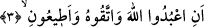
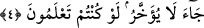

3. Allah’a kulluk edin; O’na karşı gelmekten sakının ve bana itâat edin ki,
“Allah’a kulluk edin” ifâdesi yukarda geçen “nezir” ifâdesine bağlıdır. Şu hâlde
âyetin mânâsı “Allah’a kulluk edin diye şüphesiz ben sizi apaçık uyaran birisiyim”
demek olur. Allah’a kulluk kalplerin ve uzuvların fiillerinden olmak üzere bütün
vâciplere, tüm menduplar şâmildir.
“O’na karşı gelmekten sakının” ifâdesi ise bütün yasaklanmış fiillerle mekruhların
tümünden kaçınmayı içine almakta ve ifâde etmektedir.
“Bana itâat edin” ifâdesine gelince bu ifâde bütün emredilen, yasaklanan, itikada ve
amele dâir tüm hususlarda Allah’a itâat emrini içermektedir.
et-Tevilatü’n-necmiyye’de şöyle deniyor: “Bana itâat edin” demek; ahlâkımda,
sıfatlarımda, fiillerimde, amellerimde, sözlerimde ve hâllerimde bana itâat edin
demektir.
“Peygambere itâat etmek” her ne kadar Cenâb-ı Hakk’a kulluk ve O’ndan korkma
emrinin içerisine dâhil ise de bunun cümle içinde ayrıca husûsî olarak zikredilmesi, bu
emri tekid ve iyice yerleşmesini sağlamak içindir.
Bâzı âlimlere göre “itâat edin” şeklindeki emrin aslı “etîûnî” şeklinde yâ harfi ile
olup “bana itâat edin” anlamınadır. Allah burada Nûh (a.s.)’a, önceki cümleye uygun
olarak “O’na itâat edin” demesini emretmiyor. Yâni “itâat” fiili Allah’a değil de Nûh
(a.s.)’ın şahsına isnâd olunuyor. Çünkü peygambere itâat, -aslında- Allah’a itâat
demektir. Nitekim Allah Teâlâ şöyle buyurur: “Kim rasûle itâat ederse Allah’a itâat
etmiş olur.” (en-Nisa, 4/80) Mâdem ki onlar peygambere itâatla emronuluyorlar şu
hâlde peygamberin “bana itâat edin” demeye hakkı vardır. Aynı şekilde zâten insanların
icâbeti de zâhirde peygambere oluyor.
4. Allah bir kısım günahlarınızı bağışlasın ve sizi belli bir vâdeye kadar tehir etsin
(muahaze etmeden yaşatsın). Bilinmeli ki Allah’ın tâyin ettiği vâde gelince, artık o
ertelenmez. Keşke bilseydiniz!
“Bir kısım günahlarınızı” demek, bâzı günahlarınızı demektir. Bunlar da daha evvel
câhiliye devrinde işlenenlerdir. Çünkü bir kural vardır: İslam kendisinden önceyi siler,
temizler. Müslüman olduktan sonra işlenen günahlar ise böyle değildir. Çünkü o
günahlar sebebiyle insanlar hesaba çekileceklerdir ve îman etme sebebiyle o günahlar